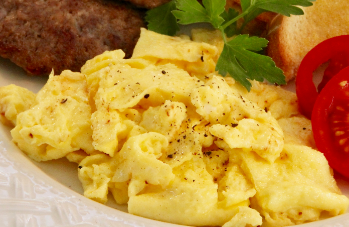

Scrambled Eggs

Description
The best way to make scrambled eggs!
Ingredients
- 2 eggs
- 1 teaspoon mayonnaise or salad dressing
- 1 teaspoon water (Optional)
- 1 teaspoon margarine or butter
- 1 pinch salt and pepper to taste
Directions
- In a cup or small bowl, whisk together the eggs, mayonnaise and water using a fork.
Melt margarine in a skillet over low heat. Pour in the eggs, and stir constantly as they cook.
Remove the eggs to a plate when they are set, but still moist. Do not over cook.
Never add salt or pepper until eggs are on plate, but these are also good without.
Nutrition Facts
Per Serving:
- Calories: 210
- Protein: 12.7g
- Carbohydrates: 1g
- Fat: 17.4g
- Cholesterol 373.7mg
- Sodium: 210.4mg